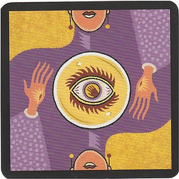
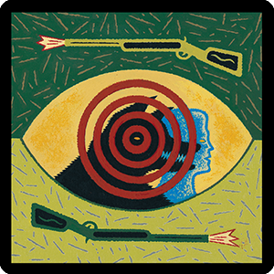

schedule Trình tự game
A. Giai đoạn ban đêm: Mọi người nhắm mắt, Quản Trò gọi vai trò đặc biệt nào thì vai trò ấy mở mắt và thực hiện chức năng của mình trong yên lặng. Trình tự của Quản Trò như sau:
- Ăn trộm (chỉ đêm đầu tiên)
- Cupid (chỉ đêm đầu tiên)
- 2 người yêu nhau (chỉ đêm đầu tiên)
- Bảo vệ
- Sói
- Tiên tri
- Phù Thủy
- Thổi sáo
- Những người bị thôi miên
- Già làng (chỉ đêm đầu tiên)
- Thợ săn (chỉ đêm đầu tiên)
2. Ban ngày: Quản Trò ra hiệu cho mọi người mở mắt, thông báo những ai đã chết đêm qua. Sau đó, dân làng bình bầu treo cổ một người bị ngờ là Ma Sói trong ban ngày (có thể hoãn không treo). Nếu có 2 người có số phiếu bầu treo như nhau thì không ai bị treo cả.
filter_none Các vai trong game
1. Tiên tri
Mỗi đêm, khi được gọi dậy Tiên tri sẽ chỉ một người. Nếu người ấy là sói quản trò sẽ gật đầu.

2. Thợ săn
Khi thợ săn chết, dù là dưới bất kỳ hình thức nào đều có thể chọn một người chơi khác và kéo hắn xuống "Tuyền Đường" cùng thợ săn.